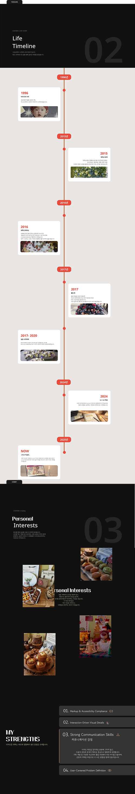
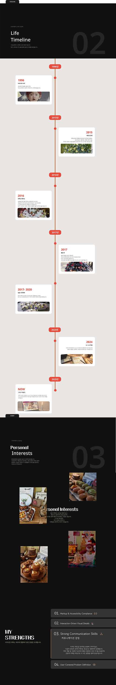

PortfolioProcess
Brainstorming
Color & Typography
Wireframe & Disgn
Design Rationale
Question & answer
이 포트폴리오를 제작하기에 앞서, 나를
어떻게 보여줄 것인지
고민하기 위해 브레인스토밍을 먼저 진행했습니다.
나의 경험, 강점, 관심사를 자유롭게 정리하며, 디자인의
방향과
포트폴리오의 기준을 설정하는 출발점으로 활용했습니다.
브레인스토밍을 통해 어떤 이야기를 어떤 순서로 보여줄 것인지
정리했고
나의 경험, 프로젝트, 강점을 키워드 단위로 정리한 뒤
포트폴리오의 섹션과 콘텐츠 흐름으로 연결했습니다.
각 단계는 사용자가 자연스럽게
나를 이해할 수 있도록 설계되었습니다.
포트폴리오의 분위기와 콘텐츠 성격을 고려해 컬러와 타이포그래피를
먼저 정의했습니다.
시각적 통일성과 가독성을 기준으로 전체 포트폴리오에 일관되게 적용될
디자인 기준을 설정했습니다.
컬러 & 타이포그래피를 바탕으로 와이어프레임을 제작하고 이를 기반으로 실제 디자인을 완성했습니다.
타이포그래피 중심의 Hero Section으로 강렬한 첫인상을
전달합니다.
"작은 디테일 하나하나가 의미를 갖는다"는 뜻과
"사람을 위해 디자인 한다"라는 두 가지 철학을 담아
디테일과 사용자 중심의 디자이너를 어필합니다.
Hero Section과 연결되게 별 효과를 주어 디자인의 일관성을
유지하고
무채색의 심심한 요소를 차분한 균형 포인트로 활용하여 화려함
속에서도
안정감을 줍니다. 나를 소개하는 글을 간략하게 넣어
명확하게
전달했습니다.
원형 프로그레스로 숙련도를 시각화합니다.
단순 나열이 아닌 원형 퍼센트 표현으로 역량 수준을
직관적으로 보여줍니다. hover 시 정확한 숫자로 퍼센트와
설명글을
추가하여 더 깊이있는 역량을 알려줍니다
코딩과 디자인을 학원에서 같이 한 프로젝트를 보여줌으로써
실무 역량을 보여주였습니다.
Hover 시 메인 이미지로 프로젝트를 직관적으로 파악 가능하고
Click 시 해당 프로젝트 화면으로 이동하여 깊이 있는 탐색
유도를 하였습니다.
가로 스크롤을 활용해 나의 프로젝트를 한 흐름으로
보여주었습니다. 사용자는 스크롤을 따라 이동하며
각 프로젝트의 맥락과 방향을 자연스럽게 살펴볼 수 있습니다.
포트폴리오를 제작하며 거친 과정을 간결하게 정리했습니다.
복잡한 설명 대신, 한눈에 흐름을 이해할 수 있도록
구성했습니다.
글자에 모션을 주어 작은 움직임을 더해 마지막까지 집중할 수
있는
화면을 만들었습니다. 연락 정보를 담백하게 전달하며
포트폴리오의
여운을 남기는 섹션입니다.
텍스트와 비주얼을 함께 구성해 나의 배경과 사고 방식을 한 화면에서 이해할 수 있도록 설계했습니다. 사용자는 이 섹션을 통해 디자이너로서의 방향성을 빠르게 파악할 수 있습니다.
시간의 흐름에 따라 나의 경험과 변화를 정리한 섹션입니다.사진과 간결한 텍스트를 함께 배치해 이야기를 직관적으로 전달하도록 구성했습니다.
개인적인 관심사를 비주얼 중심으로 정리해 배치했습니다. 이미지를 통해 나의 취향과 감각을 자연스럽게 전달합니다.
디자인 사고부터 구현, 커뮤니케이션까지 나의 역할과 강점을 단계별로 정리했습니다. 사용자는 이 섹션을 통해 어떤 영역에서 강점을 가진 디자이너인지 명확하게 파악할 수 있습니다.
 

QUESTION & ANSWER
나의 이야기가 자연스럽게 전달되도록
자기소개부터 타임라인, 취미, 강점의 순서로 구성했습니다.
사용자는 흐름을 따라 스크롤하며
나의 경험과 방향성을 단계적으로 이해할 수 있습니다.
모든 정보를 한 화면에 담기보다,핵심 정보만 먼저 보여주고
이를 통해 사용자는 과도한 정보로 인해 흐름이 끊기지 않도록 했습니다.
모든 인터랙션에는 목적을 두었습니다.시선을 분산시키는 과한 모션은 배제하고
사용자의 이해를 돕는 지점에만 절제된 움직임을 적용했습니다.
첫 화면에서 시선을 머무르게 하기 위해
텍스트에 빛과 별 요소를 더했습니다.
시선 흐름보다는
분위기를 만드는 인터랙션에 집중했습니다.
프로젝트 리스트에 인터랙션을 더해
사용자가 시선을 움직이는 흐름에 맞춰
자연스럽게 정보를 인지할 수 있도록 했습니다.
움직임은 주목을 위한 요소가 아닌,
이해를 돕는 보조 역할에 집중했습니다.
양쪽에서 텍스트가 등장하며 흐름을 만들어
사용자의 시선을 자연스럽게 중앙 이미지로 유도했습니다.
빠르게 이미지를 노출해
취미의 분위기와 감각을 직관적으로 전달하고자 했습니다.
나의 강점을 한눈에 파악할 수 있도록 리스트 형태로 구성하고,
클릭 시 상세 내용이 노출되는 인터랙션을 적용했습니다.
사용자는 필요한 정보만 선택적으로 확인하며
흐름을 방해받지 않도록 설계했습니다.